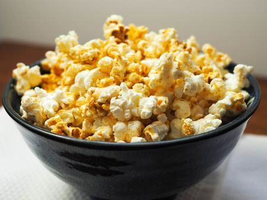

Fried Popcorn

Home-Made Store-Bought Popcorn
popcorn, a variety of corn (maize), the kernels of which, when exposed to heat or microwaves, are exploded into large fluffy masses. ... A popcorn kernel has an extremely hard hull and hard outer endosperm, and within there is a mass of moist, starchy, white endosperm. The moisture is optimally about 13.5 percent.
Ingredients
- Microwave
- butter
- Dried popcorn kernels
- hydrongenated soybean oil
- yellow flavoring
- Pinch of salt
- popcorn bag
- Blood, Sweat, & Tears
Steps
- Drive to walmart and buy the offbrand popcorn
- Open popcorn box
- remove plastic wrapper around popcorn bag(do not open popcorn bag!)
- massage fake butter around in bag for more even buttery coating
- place in microwave for 2 minutes
- remove from microwave and enjoy!